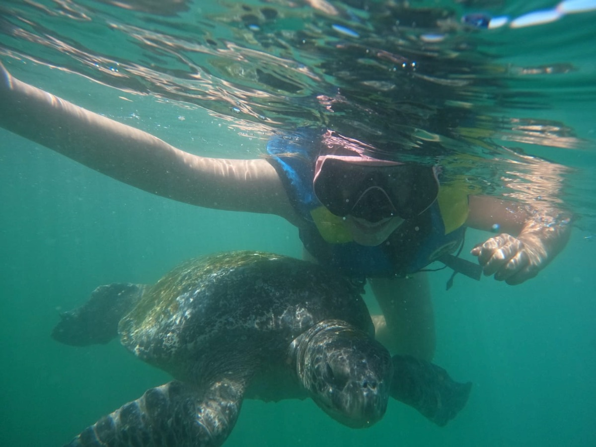
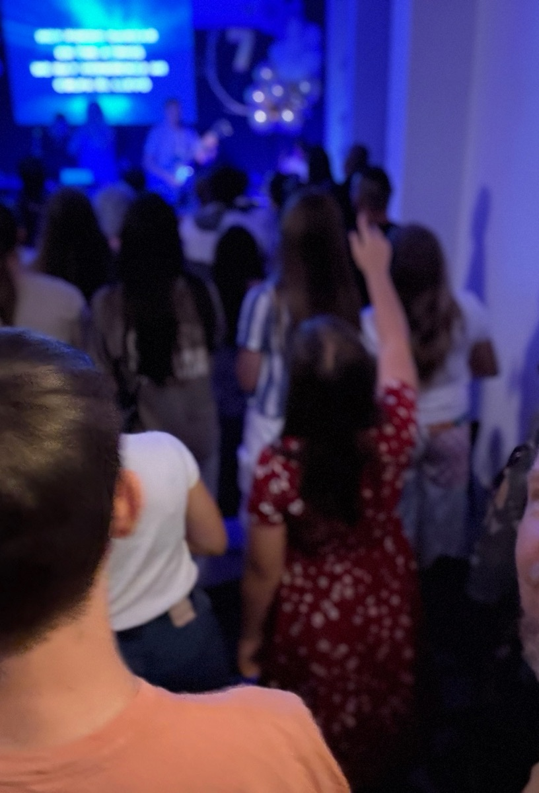
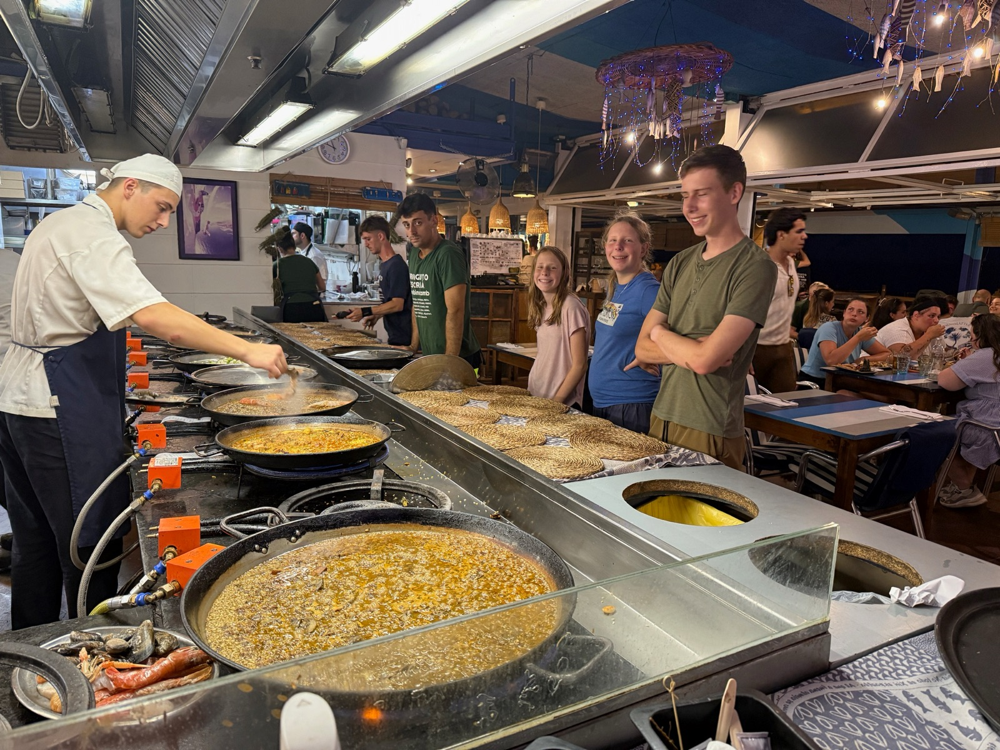
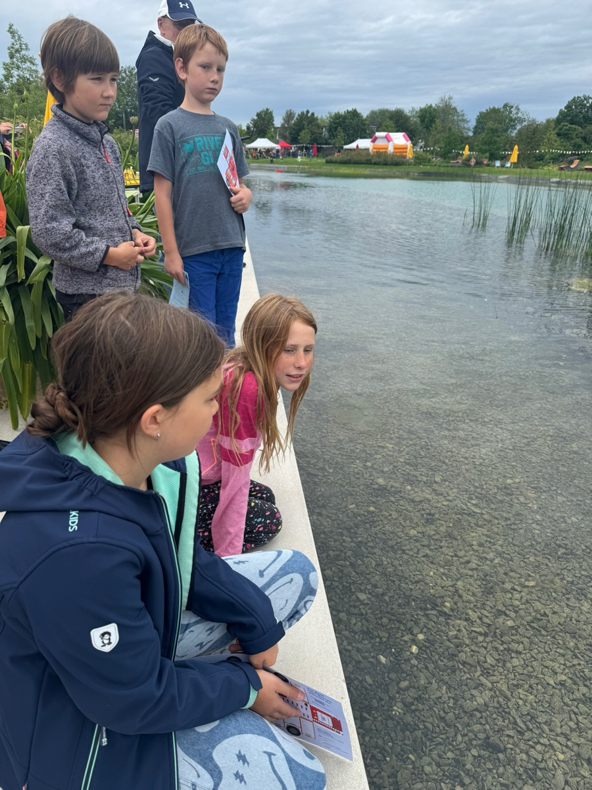
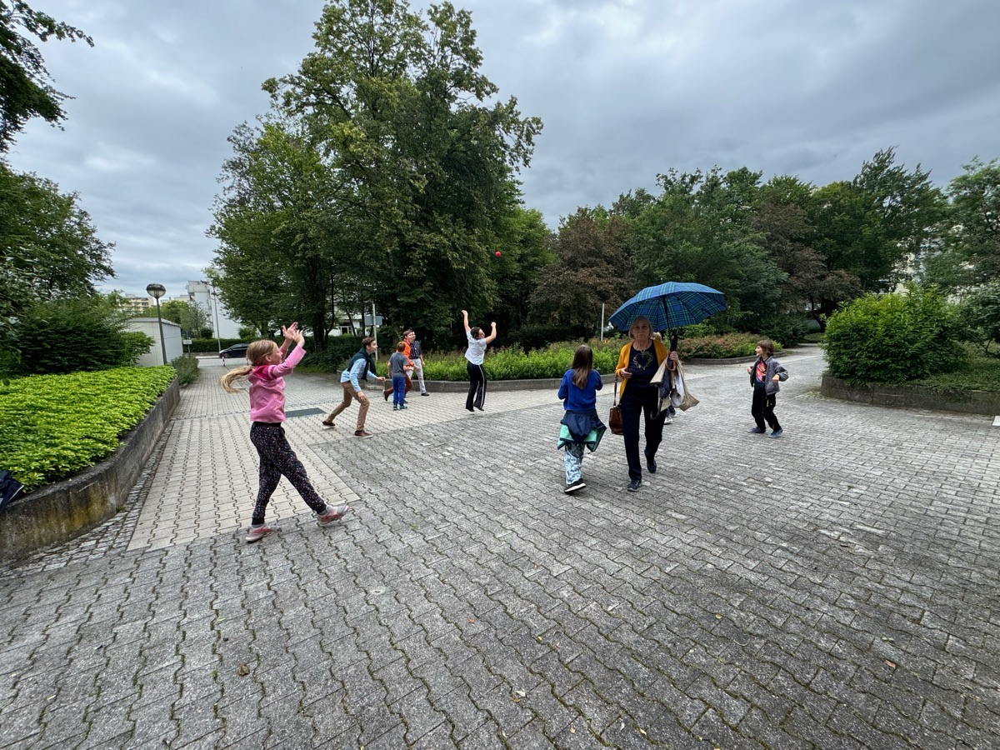
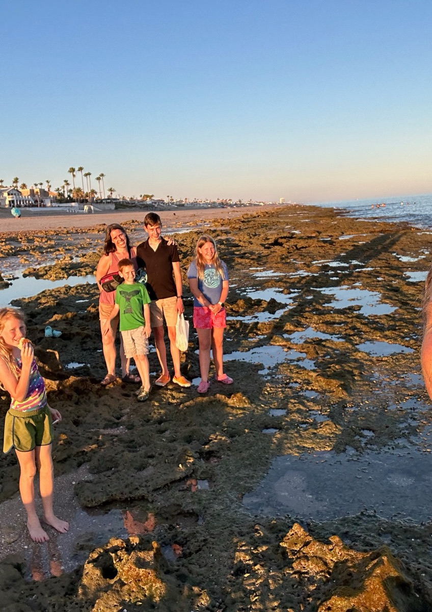
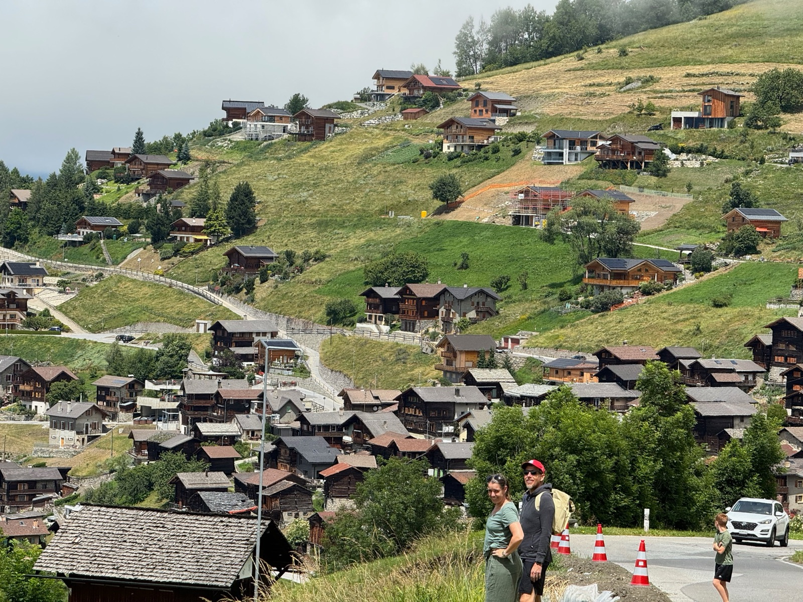
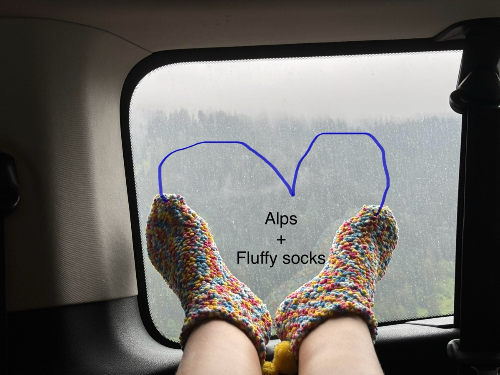

San Jose, California · Est. 2020
A college-preparatory homeschool with immersion in German and Spanish, extended study abroad, and service at the heart of everything we learn.
Handel International Homeschool was established in 2020 to foster global understanding and best equip our individual students to serve humanity. We were ready to begin a more personalized education that would let our students deepen and explore their strengths and passions beyond grade-level restrictions, while continuing to build their fluency in German and Spanish.
Our principal, Julie Handel, is a former small-business consultant and a homeschooled student, and our head of school, Peter Handel, is an accomplished engineer and a descendant of a long line of college professors passionate about learning. Our high school program operates under the auspices of The King’s Academy PSP, a registered California private school satellite program compliant with California Education Code § 33190.
Our faith guides our homeschooling values: equipping and educating international citizens to serve communities locally and abroad.
Intentional homeschooling has trained our students to flourish in intergenerational environments. Instruction from accomplished community members and teaching opportunities with peers and younger community members allow for richer learning and the chance to pass on the blessing of learning to others. We intentionally cultivate these investments and skill-building for the good of the community and the ultimate glory of our Creator.
Because of our homeschooling schedule, we have been able to travel extensively for longer periods, exposing our children to scholastic, ecclesiastical, cultural, and historical experiences that have enriched their understanding of our global community. Immersive language weeks, attending a public German university-track high school for multiple months, participating in a horse camp in Spain, working with orphans in Mexico, and with special-needs children in Peru have deepened their understanding of cultural strengths and differences.
Their experiences in Italy, Switzerland, and Japan have shown them how much a shared language matters in a given situation, while also showing them how much they can appreciate cultural differences without that same depth of understanding.
While at home, we surround them as much as possible with native German and Spanish speakers. Their father’s daily conversations are enriched by extended family visiting for months at a time; cousins, grandparents, weekly tutors, church members, au pairs, and international students have all blessed our children with their unique perspectives and regional language insights.
Serving our community in Silicon Valley’s rich cultural landscape has exposed them to many, if not all, Spanish-speaking countries around the world. Time at Sacred Heart Food Bank handing out food bags, or trips with our church to pass out food in underserved neighborhoods, led to many Spanish conversations, sometimes with our children serving as translators. Outings to the local taqueria started with our children explaining how they could speak Spanish without an English accent, and why they said some words as if they were Mexican and others as if they were from Spain.








Most core courses are taught in English, with enrichment programs offered in immersive German and Spanish. Most class sizes range from 12 to 20, except for community college courses.
Beyond a love of spoken language, our family loves the language of the universe: math. Homeschooling lets each student progress at their own pace, choosing between co-op classes led by doctorate-holding moms or passionate subject experts at our local homeschool support program, AoPS online courses, and community college classes. This community has enabled our students to study chemistry and physics at advanced levels and apply those passions in robotics clubs, winning UC Berkeley’s Pioneers in Engineering robotics contest three years and counting. We have competed locally and nationally in speech and debate and, through a drama club, performed lead roles in one-act plays.
While students choose their classes, the administration oversees course categories, standards, and daily activities. Choosing their own courses fosters responsibility and decision-making, and cultivates independence and self-discipline.
All courses are college-preparatory and pedagogically deep. Inquiry begins with primary-source analysis, high-level informational and literary texts, and the scientific method. Analysis then builds on sequential theoretical understanding and logic. Finally, students synthesize evidence-based arguments and conclusions. Educational partners allow students to take College Board–certified AP courses as well as courses for concurrent college credit.
Home courses are personalized: syllabi and chosen curriculum are completed through projects, labs, and presentations, which count toward the final grade. Grades in courses taken outside the home are determined by those instructors and faithfully transmitted to our transcript. Grades from all courses attempted are reported.
We report both weighted and unweighted GPA. All subjects except P.E. and Bible are included. AP and community college courses are weighted +1.0. A 5-unit course represents 6–9 hours per week of instruction, homework, and study.
220 credits, including courses satisfying the minimum requirements under California law and San Jose Unified School District, plus 15 community service hours each year.
PSAT, SAT, AP, Avant STAMP 4S Language Assessment (ACTFL framework), and the National Spanish Exam results support the rigor of coursework and the validity of grades.
SAT 2026 — Class of 2027 (one graduate), compared with national and California averages:
| National | California | Student | |
|---|---|---|---|
| Reading & Writing | 528 | 560 | 780 |
| Math | 517 | 548 | 800 |
| Total | 1045 | 1108 | 1580 |
College admissions representatives, counselors, and families are welcome to reach out with questions about our program, or to request a school profile, transcript, or course descriptions.
Send us a note and we’ll reply by email.